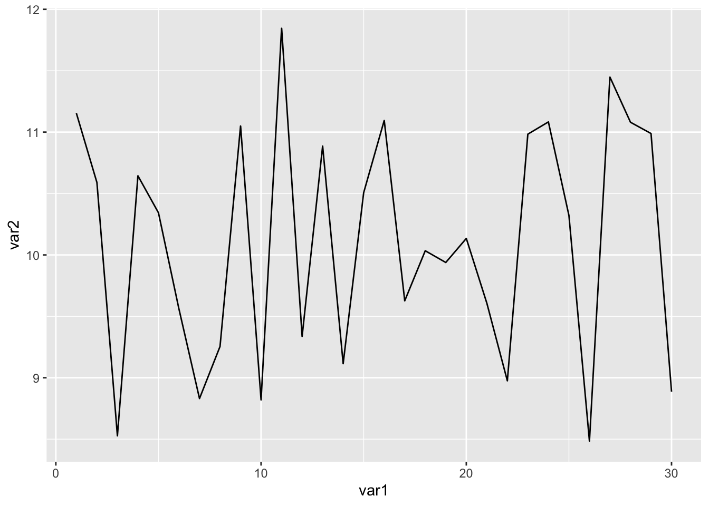
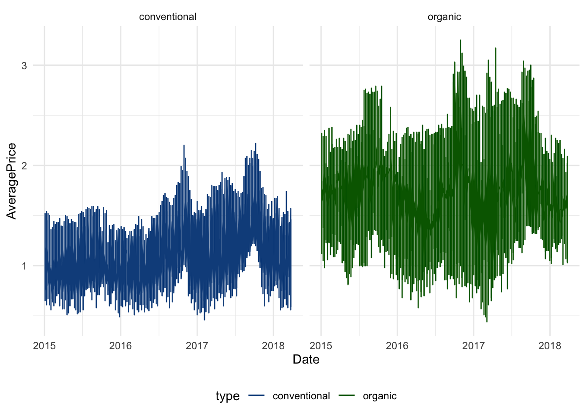

6 Avocados Tutorial - Part 2
We’re going to continue our exploration of the avocados dataset for this tutorial. We’re going to introduce dplyr, an R package with tremendous power that was built with Excel users in mind.
Goals of this tutorial
- Introduce Tidyverse and dplyr
- Practice exploring the avocados dataset using dplyr
- Create more advanced ggplot plots
- Investigate Avocado price trends
Datasets used
- avocado.csv
6.1 Tidyverse : dplyr crash course
The tidyverse is a collection of R packages for data manipulation, exploration and visualization that share a common design philosophy. The advantages of the tidyverse include consistent functions, workflow coverage, a path to data science education, a parsimonious approach to the development of data science tools, and the possibility of greater productivity. The tidyverse packages can be used in conjunction with any R packages but they are designed to work seamlessly with each other. The basic set of packages are:

Figure 6.1: Image courtesy of https://rviews.rstudio.com/2017/06/08/what-is-the-tidyverse/)
As we see from the image, we’re already familiar with the visualization package of tidyverse - ggplot2 ! As stated in the introductory material, there are thousands of packages in R, many of which solve the same problem. Tidyverse is just a specific set of packages that are enhanced to work together, so from here on we’re going to stick to this set of R packages for consistency. Tidyverse data science forms what we refer to as tidy datasets, which just refers to specific datasets in tidy format. You can use any R package with tidy datasets and can also use tidyverse packages on a regular data.frame. When you use the set of tidyverse packages together, however, you have some extra functionality which will come in handy. You can read more about tidyverse in this R blog post
6.1.1 Dplyr
dplyr is an R package for data manipulation, providing a consistent set of functions that help you solve the most common data manipulation challenges. dplyr is part of the Tidyverse family of packages, thus allowing a user to create tidy datasets. “Tidy datasets are easy to manipulate, model and visualise, and have a specific structure: each variable is a column, each observation is a row, and each type of observational unit is a table.” (From Wickham, H. (2014): Tidy Data))
select()picks variables based on their names.filter()picks cases based on their values.mutate()adds new variables that are functions of existing variablessummarise()reduces multiple values down to a single summary.arrange()changes the ordering of the rows.
These all combine naturally with group_by() which allows you to perform any operation by group.
6.1.2 Exploring Dplyr
Let’s begin by loading our packages and opening the avocados dataset back up.
# first let's load in the packages we need
library(data.table)
library(dplyr)
library(ggplot2)
library(stringr)
library(DT)
library(tidyr)
library(corrplot)
library(leaflet)
library(lubridate)
library(cowplot)##
## ********************************************************## Note: As of version 1.0.0, cowplot does not change the## default ggplot2 theme anymore. To recover the previous## behavior, execute:
## theme_set(theme_cowplot())## ********************************************************##
## Attaching package: 'cowplot'## The following object is masked from 'package:lubridate':
##
## stampNow, let’s use dplyr with this dataset. First, let’s select a subset of this dataset using the select() function
# subselect the Average Price, Total Volume, and type from our original dataset
select_df <- select(.data = avocado_df, AveragePrice, Total.Volume, type)A key thing to notice here is the arguments after the .data argument. If we use the help() function to learn more about select(), we see that the arguments are .data. and .... The ... is another way to describe ambiguous arguments - meaning you can add as many or as few as you want. In this case, we want the variable names we want to select here. Note that even though it’s good practice to always use the convention of argument = my_specific_argument_condition, you don’t have to add the argument = part so long as the arguments are written in the same order the function expects. For example, in the code above, we don’t need to write select(.data = avocado_df, AveragePrice, Total.Volume, type), we can simply write select(avocado_df, AveragePrice, Total.Volume, type). This is true for ALL functions, but you’ll need to keep the order of your arguments straight.
Now let’s filter the original avocado_df to extract cases where avocados are organic
# filter the dataset when the type is organic
filter_df <- filter(.data = avocado_df, type=='organic')Now let’s mutate the dataset and add our revenue and profit columns.
6.1.3 Nested Functions
Let’s say we want to create a sub-selected dataset of AveragePrice, Total.Volume, and type where the region is Northeast.
Notice how our .data is the result of the filter() function where we select only the Northeast region. Here’s what the nested_df looks like now.
6.1.4 Pipes %>%
The last option for handling data with dplyr, pipes, are a fairly recent addition to R. Pipes let you take the output of one function and send it directly to the next, which is useful when you need to do many things to the same dataset. You’ll see more advanced code make use of this. We’ll show a quick example here so you can see how it works, but we won’t use it for the rest of the tutorial after this.
Let’s do the exact same thing above only this time let’s use pipes.
Above code reads like so to create the pipe_df dataframe. Begin with avocado_df and send that to the filter() function where we grab the Northeast region from the avocado_df dataset, then immediately send the result of the filter to the select function where we sub-select the AveragePrice, Total.Volume, type variables. As we’ll see, the output is the same - it’s just another way of coding!
6.2 Avocados Dataframe with dplyr
In this tutorial we’re going to accomplish the following:
- Plot Price Trends over time for both types of avocados
6.2.1 Price Trends
First, let’s check out our date column.
# first let's load in the packages we need
library(data.table)
library(dplyr)
library(ggplot2)
library(tibbletime)
# now let's load in our dataset using read.csv
avocado_df <- read.csv("datasets/avocado.csv")
class(avocado_df$Date)## [1] "factor"We need to change the class of the avocado_df$Date column. We can do this using as.Date function that can reclassify a variable as a date class in R. We know that the date is stored as Year-Month-Day, so we relay this to R which uses the following format for classifying datestrings "%Y-%m-%d" . %Y is a 4 digit year, %m is a 2 digit month, and %d is a 2 digit day. More can be read on this here.
# Change the date column from factor to date
avocado_df$Date <- as.Date(avocado_df$Date, "%Y-%m-%d")
class(avocado_df$Date)## [1] "Date"Now let’s sort the dates via the order function so we can analyze the price trends over time.
## [1] "2015-01-04" "2015-01-04" "2015-01-04" "2015-01-04" "2015-01-04"
## [6] "2015-01-04"Now let’s select the columns we want using dplyr and plot them using ggplot
price_trend <- select(.data = avocado_df, Date, AveragePrice, type)
ggplot(data = price_trend, aes(x = Date, y = AveragePrice, col=type)) +
geom_line() +
facet_wrap(~type) + theme(legend.position="bottom")
Notice that we had the following arguments in the aes parameter - x, y, col. Our x axis is the date, y axis is the AveragePrice, and we color the data based on the type of avocado. Can we spice this plot up a bit by customizing the colors? Sure!
Altering the colors of the plots using scale_color_manual
# Create a Facet Wrap for each product
ggplot(data = price_trend, aes(x = Date, y = AveragePrice, col=type)) +
geom_line() +
facet_wrap(~ type) + theme_minimal() + theme(legend.position="bottom") + scale_color_manual(values=c("blue", "green"))# Create a Facet Wrap for each product
ggplot(data = price_trend, aes(x = Date, y = AveragePrice, col=type)) +
geom_line() +
facet_wrap(~ type) + theme_minimal() + theme(legend.position="bottom") + scale_color_manual(values=c("dodgerblue4", "darkgreen"))We used the function scale_color_manual because we defined the coloring via the col argument in the aes function. Had we chosen another function that requires a fill instead of a col, we would have had to use scale_fill_manual. Notice that the argument for the scale_color_manual is values=, which takes a list that must be the same length as the input parameters. R has a wide range of colors to choose from - a list can be found here.
- we see that the average price of organic avocados is higher than conventional avocados.
6.2.2 Price and Total Volume
Supply and demand is key component of pricing. Let’s examine the relationship between the price and total volume. We begin by creating separate dataframes for organic and conventional.
# Filter by type - our input data for selected variabls is teh filtered organic/conventional data
organic <- select(.data = filter(.data = avocado_df,type == "organic"), Date, AveragePrice, type, Total.Volume)
conventional <- select(.data = filter(.data = avocado_df,type == "conventional"), Date, AveragePrice, type, Total.Volume)We’ve created our two new datasets. Let’s say we want to average the data by month to make it easier to work with and analyze. This is easy once we convert our data.frame to a tibbletime tbl_df. tibbletime is a separate tibble package that obeys the nomenclature associated with the greater R Tidyverse. tibbletime is an advanced R package that is great when working with dataframes. It also allows us to convert our standard R data.frame to a tibbletime data.frame. This allows us to do fancy things with the dataframe like average the data by each month of the datetime.
# organize the organic dataframe as a tbl_time object where the index is the Date
organic <- as_tbl_time(organic, index=Date)
class(organic)## [1] "tbl_time" "tbl_df" "tbl" "data.frame"We can use the as_period function to average this data into a monthly dataset.
Let’s do the same for conventional avocados
# Conventional Avocadoes
conventional <- as_tbl_time(conventional, index=Date)
conventional <- as_period(conventional, '1 month')Now let’s plot up the the price trends with the volume trends of both types of avocados. We’ll be creating a total of 4 plots and we’ll want them in the same window. In order to achieve this, we will use a package called cowplot which has a function called plot_grid. plot_grid allows us to plot any number of ggplot instances in the same window.
# Let's create a conventional average price chart
conventional_price <- ggplot(data = conventional, aes(x=Date, y=AveragePrice)) + geom_line(color="dodgerblue2") +
labs(title="Conventional Avocados") + geom_hline(yintercept=max(conventional$AveragePrice), linetype="dashed", color = "red") +
geom_hline(yintercept=min(conventional$AveragePrice), linetype="dashed", color = "blue")
# Let's create a conventional volume chart
conventional_volume <- ggplot(data = conventional, aes(x=Date, y=Total.Volume)) + geom_bar(stat='identity', fill="dodgerblue2", color="black") +
geom_smooth(method="loess", color="red")
# Let's create an organic average price chart
organic_price = ggplot(data = organic, aes(x=Date, y=AveragePrice)) + geom_line(color="darkgreen")
labs(title="Organic Avocados") + geom_hline(yintercept=max(organic$AveragePrice), linetype="dashed", color = "red") +
geom_hline(yintercept=min(organic$AveragePrice), linetype="dashed", color = "blue")## NULL# Let's create a organic volume chart
organic_volume <- ggplot(data = organic, aes(x=Date, y=Total.Volume)) + geom_bar(stat='identity', fill="darkgreen",color="black") + geom_smooth(method="loess", color="yellow")
#now use cowplot plot_grid to plot all 4 plots in the same window
plot_grid(conventional_price, organic_price,conventional_volume, organic_volume, nrow=2, ncol=2)
Notice that we created 4 separate ggplots and saved them as objects. Once we had all of the objects created, we placed them in plot_grid as the plots we wanted to add to the plot_grid window. Then we specified the number of rows and columns we wanted the grid to have via nrow and ncol, respectively.
Summary: - 2015 prices were in the $1.00 range for conventional avocados. In 2016 and 2017, the density of the prices were a little bit higher. - It looks that most price peaks occur for both conventional and organic avocados between the months of September and October. I wonder why this is? Could it have to do with fall sport viewing which is often accompanied by guacamole? - Major price drop at the end of each year. Why is demand dropping so much?
6.2.3 Yearly and Monthly Patterns
We have 4 years of data in this dataset, so we have 4 values for each month when it comes to Average Price. Let’s reorganize our data to include a month variable and then average the 4 values for each month together to create a monthly price point average.
# create a separate dataframe by first copying the original avocado_df
seasonal_df <- avocado_df
# create 3 new variables, just expanding on the date using the format function
# let's test out the format function to see what it does
avocado_df$Date[1]## [1] "2015-01-04"## [1] "2015-01"# create the variables - notice the structure of the format
seasonal_df$month_year <- format(as.Date(avocado_df$Date), "%Y-%m")
seasonal_df$month <- format(as.Date(avocado_df$Date), "%m")
seasonal_df$year <- format(as.Date(avocado_df$Date), "%Y")
# print out the first 10 values
seasonal_df$month[1:10]## [1] "01" "01" "01" "01" "01" "01" "01" "01" "01" "01"Let’s take this one step further and let’s convert our month variable to an Abbreviated Month (aka month “01”" is Jan). We can do this by using the month.abb function (which requires the input to be a numeric, so we convert the seasonal_df$month to numeric within the funciton)
## [1] "Jan" "Jan" "Jan" "Jan" "Jan" "Jan" "Jan" "Jan" "Jan" "Jan"## [1] "character"This is a character, so let’s change this to a factor where the levels available are R’s abbreviated months - aka month.abb
## [1] Jan Jan Jan Jan Jan Jan Jan Jan Jan Jan
## Levels: Jan Feb Mar Apr May Jun Jul Aug Sep Oct Nov DecOur dataset is now organized - let’s plot it up to learn more about the avocados! First let’s plot a density plot of the distribution of prices by year.
** Distribution of Average Prices by year for both avocado types **
ggplot(seasonal_df, aes(x = AveragePrice, fill = as.factor(year))) +
geom_density(alpha = .5) +
facet_wrap(~year) + labs(title="Distribution of Prices by year", x = 'Average Price', y = 'Density') +
scale_fill_manual(values=c("blue", "green", "orange", "red"))Notice that we used the scale_fill_manual argument here because the geom_density argument requires a fill value in the ggplot components aes function.
** Distribution of Average Prices by month for the Conventional Avocado **
Let’s select the conventional avocados using select and filter from dplyr.
Now, let’s group this dataframe by the monthabb variable
Now, we can summzarize this data by taking the mean() of the AveragePrice variable and creating a new variable named avg
Plot the price distrubion by month!
ggplot(data = month_df, aes(x=monthabb, y=avg)) + geom_point(color="red", aes(size=avg)) + geom_line(group=1, color="blue") +
labs(title="Conventional Avocados", x="Month", y="Average Price")Summary: - October is the best month for Conventional Avocados for the entire dataset with average prices above $1.30 - February is the worst month for Conventional Avocados with average prices barely above $1.00
6.3 Recap
- Tidyverse is a set of R packages designed with consistent framework and usability -
dplyrandtibbletimeare very useful when dealing with spreadsheet data - Subselecting, grouping, averaging can all be accomplished with
dplyrandtibbletime plot_gridfrom thecowplotpackage is useful for plotting multipleggplot2plots in the same windowggplot2plots are extremely customizable - we usedscale_color_manualas one example of how customizable they are here.
6.4 Avocados 2 Assignment
Perform the same analysis onthe price distribution by month that we did for Conventional Avocados only this time explor the Organic type of avocados. Combine both plots to be part of the same window. Use custom colors selected from the R color guide. Create proper labels with ggplot2s lab() function. Submit final plot.
Your final plot should look something like this…